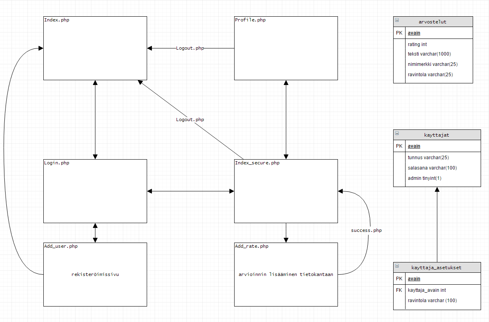

Työn aiheeksi valittiin verkkosivusto, joka hakee lounasravintoloiden ruokalistat ja esittää nämä ruokalistat yhdellä sivustolla. Aihe valittiin, koska lounaspaikan valitseminen on helpompaa jos voi nopeasti ja helposti vertailla eri ravintoloiden ruokia. Tämä sivusto on tehty niin sanotusti omaan käyttöön ja täten sen työstämiseen on löytynyt paljon motivaatiota. Sivuston ominaisuuksiin kuuluu muun muassa autentikointi, ravintoloiden arviointi, eri ravintoloiden valitseminen omaan käyttöön
Alkuperäinen suunnitelma oli tehdä ruokalistoja listaava sivu ja kehittää kyseistä ideaa pidemmälle. Suunnitelma vaiheessa harjoitustyöhön haluttiin rekisteröityminen / sisäänkirjautuminen tietokantojen kautta, käyttäjän mahdollisuus valita suosikki ravintolat, ruokalistat koko viikolta ja avainsanoja joilla voi suodattaa suosikkiruokia.

Ensimmäinen haaste oli saada toimiva ratkaisu json-tiedostojen saamiseksi ja päivittämiseksi. Ensimmäinen versio, jolla toteutimme haun, oli yahoon API. Tämän osoittautuessa epävarmaksi, vaihdoimme yksinkertaiseen linuxilla toteutettuun bash scriptiin. Scripti haki lounaslistat ja tallennsi ne suoraan palvelimelle, hyödyntäen crontab- ja wget-komentoja. Tämä osoittautui helpoimmaksi ja kätevimmäksi tavaksi toteuttaa lounaslistojen lataaminen, mutta ongelmana oli sivuston siirokyvyn rajoittuvuus eri palvelimille. Harjoitustyön kannalta paras ratkaisu saatiin luomalla php-lohjelma, joka hakee lounaslistat suoraan palvelimelle listojen vanhentuessa.
Sivun ulkoasunmuotoilu oli aikavievää, koska väri- ja tyylisilmä vastaa sokeata kyklooppia, mutta suhteellisen yksinkertaista. Ulkoasussa käytetty bootstrap:iä ja css:ää.
Käyttöliittymä ohjelmoitiin pääsäntöisesti JavaScriptillä. Etusivulle tulostetaan lounaslistat javascriptin avulla, sekä viikonpäivät-navigointipalkki. Ruokalistojen data haetaan palvelimelta käyttäen JQueryä ja ajaxia. Lähes jokaiselle sivulle on lisätty navigointipalkki, joka muotoillaan PHP:llä. PHP-ohjelma tarkistaa onko autentikointi tapahtunut ja muotoilee navbarin oikeanlaiseksi. Istunnon-hallintaa hyödynnetään myös harjoitustyössä, lähes joka sivulla.
Tietokannat luotiin sisäänkirjautumista, käyttäjäasetuksia ja arvosteluita varten. Tietokantoihin luotiin kolme taulua, joista käyttäjän ja käyttäjä_asetusten välillä käytimme viiteavainta. Viite-avain hakee käyttäjä taulusta avaimen, jonka avulla määritetään mille käyttäjälle kyseinen asetus kuuluu.
Rekisteröityminen sivuille tapahtuu kun käyttäjä syötää käyttäjätunnuksen ja salasanan rekisteröitymis-sivulla. Käyttäjänimen ja salasanan tulee molempien olla vähintään yhden merkin pituisia. Salasanoja saa olla useita samoja eri käyttäjillä, mutta käyttäjänimiä ei voi olla tietokannan käyttäjä taulussa kuin yksi (uniikki). Php-ohjelma tarkastaa tietokannasta ennen käyttäjätilin luomista onko käyttäjänimi jo olemassa. Salasanat häshätään ja suolataan pharlib-kirjastolla, joka opetettiin kurssin aikana.
Sisäänkirjautuminen tapahtuu tietokannan kautta, jossa tarkistetaan onko käyttäjätunnus ja salasana yhteensopivat. Sisäänkirjautunut käyttäjä voi muokata omaa profiiliaan. Omassa profiilissa käyttäjä voi valita suosikki ravintolansa, vaihtaa salasanan tai poistaa käyttäjätunnuksensa. Valitut suosikkiravintolat tulevat näkyviin etusivun ravintoloiksi. Tämä on hyödyllinen toiminto siinä vaiheessa kun ravintoloita alkaa olemaan satoja kappaleita, jolloin suosiikien seuraaminen olisi nopeampaa ja helpompaa.
Arvostelun tarkoitus on antaa ravintolalle tähtiä, kirjoitettu arvostelu, ja näyttämään annettujen tähtien keskiarvo. Arvostelu toimii vain kirjautuneille käyttäjille, arvostelut tallennetaan tietokannan arvostelut tauluun, josta voidaan tulostaa esimerkiksi kaikki kirjoitetut arvostelut ja tähdet. Arvostelu ei käytä hyväksi erillistä sivua, vaan bootsrap:in collapsen avulla luotua funktiota. Tämä selkeyttää käyttöliittymää huomattavasti.
Työn toteutuksessa käytettiin javascriptiä, jqueryä, jsonia, bootstrap, mysql sekä php:tä.
Työhön käytettiin noin kuusikymmentä (60) työtuntia. Useat osiot työssä tehtiin yhdessä, erityisesti haastelliset ja ongelmalliset osa-alueet. Harjoitustyö opetti meille paljon ohjelmoinnista, resurssien hallinnasta(aikataulut mm.), tiedostorakenteista ja yhtenäisen kielen valinnasta. Kun harjoitustyö alkaa saavuttamaan tietyn mittasuhteen, alkaa yhden asian muuttaminen olemaan haasteellista, varsinkin jos taulut, muuttujat, yms. on nimetty epäloogisesti tai epäyhtenäisesti. Suorastaan hilpeyttä aiheuttanut arvostelut taulun sisältämät alkiot ja niiden suomi/englanti sekoitukset, jotka saivat aikaan sekaannuksia ohjelmaa kehitettäessä. Ryhmätyö toimi erinomaisesti ja motivaatiosta ei ollut puutetta. Koko harjoitustyö tehtiin vapaa-ajalla, eikä se tuntunut pakotetulta.
Yksi yllättävä haaste oli lounasravintoloiden ruokalistojen löytäminen, sillä ravintolat harvemmin tarjoaa omia ruokalistojaan julkisesti json tai rss formaatissa. Ruokalistojen lataaminen palvelimelle, koska xml-http-requestia ei voi käyttää ulkopuolisessa domainissa. Tämän takia Yahoon API:a kokeiltiin käyttää JSON-tiedostojen hakemisessa. Viikonpäiväpalkki ja erityisesti kuukausien vaihtuminen oli työlästä saada toimimaan oikein.
Harjoitustyö 5/5
Php kurssiarvosana 4
Javascript kurssiarvosana 3
Oppimispäiväkirja
Javascript 3
PHP 4
Oppimispäiväkirja
Omasta mielestäni olen osallistunut harjoitustyön tekoon hyvin.
Php kurssin arvosana 5 ja javascript kurssiarvosana 4.